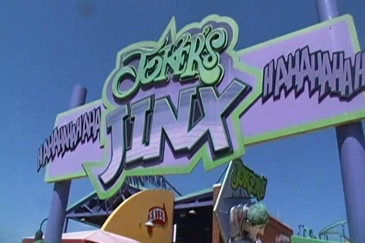
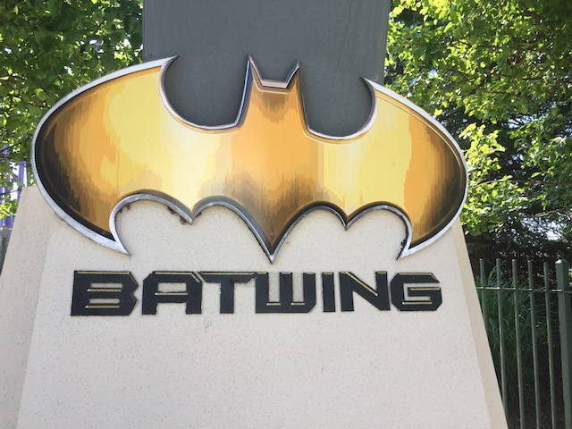

| |
Six Flags America Review

Six Flags America is a Six Flags park that.....does not have a good reputation to say the least. Yeah, not everyone hates it (incuding myself), but this park tends to get a reputation as one of the worst Six Flags parks, and a park on par with places like La Ronde and Mt. Olympus. And you know what I think about those parks. But at the same time, Fuji-Q Highlands also tends to get similar ratings, and I had a blast at that park! Almost all of the horror stories about that park were exxagerated and I had a blast. And I'm happy to say that that's essentially the same thing at Six Flags America. I know people complain about operations, and.....while the operations at Six Flags America weren't great, they were OK. The park is so dead that you still aren't gonna be waiting that long to ride. But even so, the operations still aren't that bad when it comes to shooting video (shooting footage at parks with bad operations is a total pain in the ass). Combine OK operations with a park that appears to almost always be dead, and you have a very fun day. Oh, and their coaster collection is a lot of fun as well. Yeah, they never add anything new. But when the park has an Intamin Hyper, a Premier Spaghetti Bowl, and a Vekoma Flyer, you know that you have some really good coasters and a lot of time to check out all the fun rides (just read my reviews of them down below). Check out all of the fun rides they have down below in a park that's much better than people give it credit for.
Rollercoasters
There is a link to a review of all the Rollercoasters at Six Flags America.
Top Coasters
Jokers Jinx Review

Very Fun Coasters
Batwing Review

Superman: Ride of Steel Review

Decent Coasters
Firebird Review

Roar Review

Wild One Review

Meh Coasters
Mind Eraser Review

Family Coasters
Raging Cajun Review

Kiddy Coasters
Great Chase Review

Flat Rides
Here are the reviews of all the Flat Rides at Six Flags America. Now the first thing worth mentioning would be the parks drop tower, Voodoo Drop. Now let's be blunt about this. This is NOT a good drop tower. It is VERY small, and I know that I joke that it's practically of cliff jumping size (I know from the top of the tower to the ground, absolutely not since....140 ft is too high to safely cliff jump. But if you exclude the part of the tower that's braked and solely doing the pure freefall portion, that might be 70 ft). But yeah. Voodoo Drop may be very small and towards the bottom of the drop tower barrel thanks to its small size (size DEFINATELY matters when it comes to drop towers). But I still had a lot of fun on it. The 2nd notable flat ride they have would be Wonder Woman: Lasso of Truth. Now this is the parks Starflyer. And....it was fun. Yeah. It's not one of those monterous Star Flyers (I keep missing those), but at least its not one of the puny ones either (unlike their drop tower). Fun ride, though I have to admit. The view from this is pretty damn dull. Well, at least there are some great shots of Superman & Batwing from up here. That's a plus. Moving on, they also have Zydeco Zinger, which is a Falling Star. Sadly, these things are becoming rarer as time goes on. which is a shame since....they're actually fun rides. We also checked out their teacups, the French Quarter Flyers, Cyclone (the parks scrambler), and Flying Carousel (the parks chairswings). They're all fun, but pretty standard and generic. And those are all the flat rides I rode at Six Flags America. They also have a round up, a breakdance, a pirate ship, bumper cars, and a carousel.
 Small, but fun.
Small, but fun.
Dark Rides
Six Flags America doesn't have any dark rides. Not too surprising considering how this is the red-headed step child of the Six Flags family that rarely gets any love.
Water Rides
All right. Six Flags America may not have the craziest water ride collection, but there are a couple things worth noting here. Mainly, Penguin's Blizzard River. This is another one of those Spinning Raft Rides, and....*sigh* God damn it. I think its time to just officially call this entire type of ride overhyped and overrated. It was dull at Parc Asterix, it was dull at Hansa Park, and it's dull here. I don't think its one of the way its run. I think those Spinning Raft rides are just dull rides. Maybe with fat people, it might become fun. But...I think I officially give up on these types of rides. Ugh. They also have a Shoot the Chutes, and a Rapids Ride.
 These rides continue to dissapoint me. Please start spinning.
These rides continue to dissapoint me. Please start spinning.
Water Park
Yep, Six Flags America does indeed have a water park, and no. I did not visit. Eh. It looks like a fun park with some fun slides. Maybe another day.
Dining
I did not eat at Six Flags America.
Theming and Other Attractions
Here are the reviews of all the other stuff at Six Flags America. Well, when it comes to theming, there's really not a ton at Six Flags America. I know that may not sound like much considering....this is a Six Flags Park after all. But even by Six Flags standards, there's no theming at this place. The only part of the park where they really try would be Gotham City. And....if your Gotham City makes Gotham City at Six Flags Magic Mountain look well themed, then you have to admit that your theming really is a big fat f*cking failure. Oh, and I guess the Mardi Gras New Orleans area would be theming as well. But that's not much. As for other things to do....Six Flags America seems to be really be lacking. I know Six Flags parks tend to be lacking in general when it comes to the shows and other attractions area. But Six Flags America in particular is lacking in this area. But let's keep it real. You came here for roller coasters, so I don't think this is a big loss for you.
In Conclusion
Six Flags America is a fun amusement park. I know if you just looked at the coaster collection, this would be an obvious fact. But Six Flags America has been demonized by so many coaster enthusiasts, and that just sadly isn't fair. No, this park is not in the same leagues as La Ronde and Mt. Olympus. First off, the park is so dead that the operations really wouldn't matter that much. But even from a photography stand point, the operations are all fine. It's not like the coasters only ever operate every 5 minutes or anything horrendous like that. Sure, the operations may not be the best, but considering how dead this park is, they're fine. Honestly, the park more than anything, reminds me of Geauga Lake back when I got to visit during its last few months of life. Not a bad park, but you wonder how the hell the park is still in business!? This is a park that just SCREAMS "Gonna go out of business". But....I guess overpriced parking and overpriced food is keeping them in business and....might as well keep the place running (there's a reason they don't invest much money in this place and give it all its hand-me-downs). But it's a fun park. The operations aren't nearly as bad as people make them out to be, I never had any issue with any operator or any guest in the park. And....there's actually some really good coasters! Jokers Jinx is dizzying and great. Batwing is a fun vekoma Flyer that's becoming really rare. Superman may be overrated, but it's still a lot of fun and has some great airtime. And I just had a lot of fun here. No, it's not the best Six Flags park by any means, and there are much better parks not that far away. But this is still a solid park with some really good coasters that's worth checking out at least once.
Enthusiast FAQs.
*Are there kiddy coaster restrictions? - No. You can ride Great Chase.

Tips
*Get to Batwing early. That ride is finicky and could close later in the day (may also possibly open later.)
*Don't be afraid to get any rerides since the park is so dead.
*Have Fun!!!!
Location
Upper Marlboro, Maryland, USA
Theme Park Category:
Amusement Park
Last Day Visited
July 22, 2019
Video
I unfortunately did not shoot enough video to make a Six Flags America video.
Complete Update List
2019
Mid-Atlantic Trip 2019
Here's a link to the parks website.
Home
|